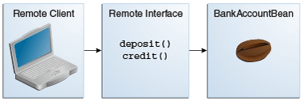

java:global[/application name]/module name /enterprise bean name[/interface name ] Copyright © 2017, Oracle and/or its affiliates. All rights reserved.
Copyright © 2017, Oracle and/or its affiliates. All rights reserved.
|
Java Platform, Enterprise Edition (Java EE) 8 The Java EE Tutorial E63026-01 Beta Draft (Pre-General Availability) |
| Previous | Next | Contents |
Note: The material in this section applies only to session beans and not to message-driven beans. Because they have a different programming model, message-driven beans do not have interfaces or no-interface views that define client access. |
Clients access enterprise beans either through a no-interface view or through a business interface. A no-interface view of an enterprise bean exposes the public methods of the enterprise bean implementation class to clients. Clients using the no-interface view of an enterprise bean may invoke any public methods in the enterprise bean implementation class or any superclasses of the implementation class. A business interface is a standard Java programming language interface that contains the business methods of the enterprise bean.
A client can access a session bean only through the methods defined in the bean’s business interface or through the public methods of an enterprise bean that has a no-interface view. The business interface or no-interface view defines the client’s view of an enterprise bean. All other aspects of the enterprise bean (method implementations and deployment settings) are hidden from the client.
Well-designed interfaces and no-interface views simplify the development and maintenance of Java EE applications. Not only do clean interfaces and no-interface views shield the clients from any complexities in the EJB tier, but they also allow the enterprise beans to change internally without affecting the clients. For example, if you change the implementation of a session bean business method, you won’t have to alter the client code. But if you were to change the method definitions in the interfaces, you might have to modify the client code as well. Therefore, it is important that you design the interfaces and no-interface views carefully to isolate your clients from possible changes in the enterprise beans.
Session beans can have more than one business interface. Session beans should, but are not required to, implement their business interface or interfaces.
The client of an enterprise bean obtains a reference to an instance of an enterprise bean through either dependency injection, using Java programming language annotations, or JNDI lookup, using the Java Naming and Directory Interface syntax to find the enterprise bean instance.
Dependency injection is the simplest way of obtaining an enterprise bean
reference. Clients that run within a Java EE server-managed environment,
JavaServer Faces web applications, JAX-RS web services, other enterprise
beans, or Java EE application clients support dependency injection using
the javax.ejb.EJB annotation.
Applications that run outside a Java EE server-managed environment, such as Java SE applications, must perform an explicit lookup. JNDI supports a global syntax for identifying Java EE components to simplify this explicit lookup.
Three JNDI namespaces are used for portable JNDI lookups: java:global,
java:module, and java:app.
The java:global JNDI namespace is the portable way of finding remote
enterprise beans using JNDI lookups. JNDI addresses are of the following
form:
java:global[/application name]/module name /enterprise bean name[/interface name ]Application name and module name default to the name of the application and module minus the file extension. Application names are required only if the application is packaged within an EAR. The interface name is required only if the enterprise bean implements more than one business interface.
The java:module namespace is used to look up local enterprise beans
within the same module. JNDI addresses using the java:module namespace
are of the following form:
java:module/enterprise bean name/[interface name]The interface name is required only if the enterprise bean implements more than one business interface.
The java:app namespace is used to look up local enterprise beans
packaged within the same application. That is, the enterprise bean is
packaged within an EAR file containing multiple Java EE modules. JNDI
addresses using the java:app namespace are of the following form:
java:app[/module name]/enterprise bean name [/interface name]The module name is optional. The interface name is required only if the enterprise bean implements more than one business interface.
For example, if an enterprise bean, MyBean, is packaged within the web
application archive myApp.war, the module name is myApp. The
portable JNDI name is java:module/MyBean. An equivalent JNDI name
using the java:global namespace is java:global/myApp/MyBean.
When you design a Java EE application, one of the first decisions you make is the type of client access allowed by the enterprise beans: remote, local, or web service.
Whether to allow local or remote access depends on the following factors.
Tight or loose coupling of related beans: Tightly coupled beans depend on one another. For example, if a session bean that processes sales orders calls a session bean that emails a confirmation message to the customer, these beans are tightly coupled. Tightly coupled beans are good candidates for local access. Because they fit together as a logical unit, they typically call each other often and would benefit from the increased performance that is possible with local access.
Type of client: If an enterprise bean is accessed by application clients, it should allow remote access. In a production environment, these clients almost always run on machines other than those on which GlassFish Server is running. If an enterprise bean’s clients are web components or other enterprise beans, the type of access depends on how you want to distribute your components.
Component distribution: Java EE applications are scalable because their server-side components can be distributed across multiple machines. In a distributed application, for example, the server that the web components run on may not be the one on which the enterprise beans they access are deployed. In this distributed scenario, the enterprise beans should allow remote access.
Performance: Owing to such factors as network latency, remote calls may be slower than local calls. On the other hand, if you distribute components among different servers, you may improve the application’s overall performance. Both of these statements are generalizations; performance can vary in different operational environments. Nevertheless, you should keep in mind how your application design might affect performance.
If you aren’t sure which type of access an enterprise bean should have, choose remote access. This decision gives you more flexibility. In the future, you can distribute your components to accommodate the growing demands on your application.
Although it is uncommon, it is possible for an enterprise bean to allow
both remote and local access. If this is the case, either the business
interface of the bean must be explicitly designated as a business
interface by being decorated with the @Remote or @Local annotations,
or the bean class must explicitly designate the business interfaces by
using the @Remote and @Local annotations. The same business
interface cannot be both a local and a remote business interface.
A local client has these characteristics.
It must run in the same application as the enterprise bean it accesses.
It can be a web component or another enterprise bean.
To the local client, the location of the enterprise bean it accesses is not transparent.
The no-interface view of an enterprise bean is a local view. The public methods of the enterprise bean implementation class are exposed to local clients that access the no-interface view of the enterprise bean. Enterprise beans that use the no-interface view do not implement a business interface.
The local business interface defines the bean’s business and lifecycle
methods. If the bean’s business interface is not decorated with @Local
or @Remote, and if the bean class does not specify the interface using
@Local or @Remote, the business interface is by default a local
interface.
To build an enterprise bean that allows only local access, you may, but are not required to, do one of the following.
Create an enterprise bean implementation class that does not implement a business interface, indicating that the bean exposes a no-interface view to clients. For example:
@Session
public class MyBean { ... }Annotate the business interface of the enterprise bean as a @Local
interface. For example:
@Local
public interface InterfaceName { ... }Specify the interface by decorating the bean class with @Local and
specify the interface name. For example:
@Local(InterfaceName.class)
public class BeanName implements InterfaceName { ... }Client access to an enterprise bean that exposes a local, no-interface view is accomplished through either dependency injection or JNDI lookup.
To obtain a reference to the no-interface view of an enterprise bean
through dependency injection, use the javax.ejb.EJB annotation and
specify the enterprise bean’s implementation class:
@EJB
ExampleBean exampleBean;To obtain a reference to the no-interface view of an enterprise bean
through JNDI lookup, use the javax.naming.InitialContext interface’s
lookup method:
ExampleBean exampleBean = (ExampleBean)
InitialContext.lookup("java:module/ExampleBean");Clients do not use the new operator to obtain a new instance of an
enterprise bean that uses a no-interface view.
Client access to enterprise beans that implement local business interfaces is accomplished through either dependency injection or JNDI lookup.
To obtain a reference to the local business interface of an enterprise
bean through dependency injection, use the javax.ejb.EJB annotation
and specify the enterprise bean’s local business interface name:
@EJB
Example example;To obtain a reference to a local business interface of an enterprise
bean through JNDI lookup, use the javax.naming.InitialContext
interface’s lookup method:
ExampleLocal example = (ExampleLocal)
InitialContext.lookup("java:module/ExampleLocal");A remote client of an enterprise bean has the following traits.
It can run on a different machine and a different JVM from the enterprise bean it accesses. (It is not required to run on a different JVM.)
It can be a web component, an application client, or another enterprise bean.
To a remote client, the location of the enterprise bean is transparent.
The enterprise bean must implement a business interface. That is, remote clients may not access an enterprise bean through a no-interface view.
To create an enterprise bean that allows remote access, you must either
Decorate the business interface of the enterprise bean with the
@Remote annotation:
@Remote
public interface InterfaceName { ... }Or decorate the bean class with @Remote, specifying the business
interface or interfaces:
@Remote(InterfaceName.class)
public class BeanName implements InterfaceName { ... }The remote interface defines the business and lifecycle methods that are
specific to the bean. For example, the remote interface of a bean named
BankAccountBean might have business methods named deposit and
credit. Figure 35-1 shows how the interface controls the
client’s view of an enterprise bean.

Client access to an enterprise bean that implements a remote business interface is accomplished through either dependency injection or JNDI lookup.
To obtain a reference to the remote business interface of an
enterprise bean through dependency injection, use the javax.ejb.EJB
annotation and specify the enterprise bean’s remote business interface
name:
@EJB
Example example;To obtain a reference to a remote business interface of an enterprise
bean through JNDI lookup, use the javax.naming.InitialContext
interface’s lookup method:
ExampleRemote example = (ExampleRemote)
InitialContext.lookup("java:global/myApp/ExampleRemote");A web service client can access a Java EE application in two ways. First, the client can access a web service created with JAX-WS. (For more information on JAX-WS, see Chapter 31, "Building Web Services with JAX-WS".) Second, a web service client can invoke the business methods of a stateless session bean. Message beans cannot be accessed by web service clients.
Provided that it uses the correct protocols (SOAP, HTTP, WSDL), any web service client can access a stateless session bean, whether or not the client is written in the Java programming language. The client doesn’t even "know" what technology implements the service: stateless session bean, JAX-WS, or some other technology. In addition, enterprise beans and web components can be clients of web services. This flexibility enables you to integrate Java EE applications with web services.
A web service client accesses a stateless session bean through the
bean’s web service endpoint implementation class. By default, all public
methods in the bean class are accessible to web service clients. The
@WebMethod annotation may be used to customize the behavior of web
service methods. If the @WebMethod annotation is used to decorate the
bean class’s methods, only those methods decorated with @WebMethod are
exposed to web service clients.
For a code sample, see A Web Service Example: helloservice.
The type of access affects the parameters of the bean methods that are called by clients. The following sections apply not only to method parameters but also to method return values.
The parameters of remote calls are more isolated than those of local calls. With remote calls, the client and the bean operate on different copies of a parameter object. If the client changes the value of the object, the value of the copy in the bean does not change. This layer of isolation can help protect the bean if the client accidentally modifies the data.
In a local call, both the client and the bean can modify the same parameter object. In general, you should not rely on this side effect of local calls. Perhaps someday you will want to distribute your components, replacing the local calls with remote ones.
As with remote clients, web service clients operate on different copies of parameters than does the bean that implements the web service.
Because remote calls are likely to be slower than local calls, the parameters in remote methods should be relatively coarse-grained. A coarse-grained object contains more data than a fine-grained one, so fewer access calls are required. For the same reason, the parameters of the methods called by web service clients should also be coarse-grained.
| Previous | Next | Contents |
Copyright © 2017, Oracle and/or its affiliates. All rights reserved.
Beta Draft (Pre-General Availability)